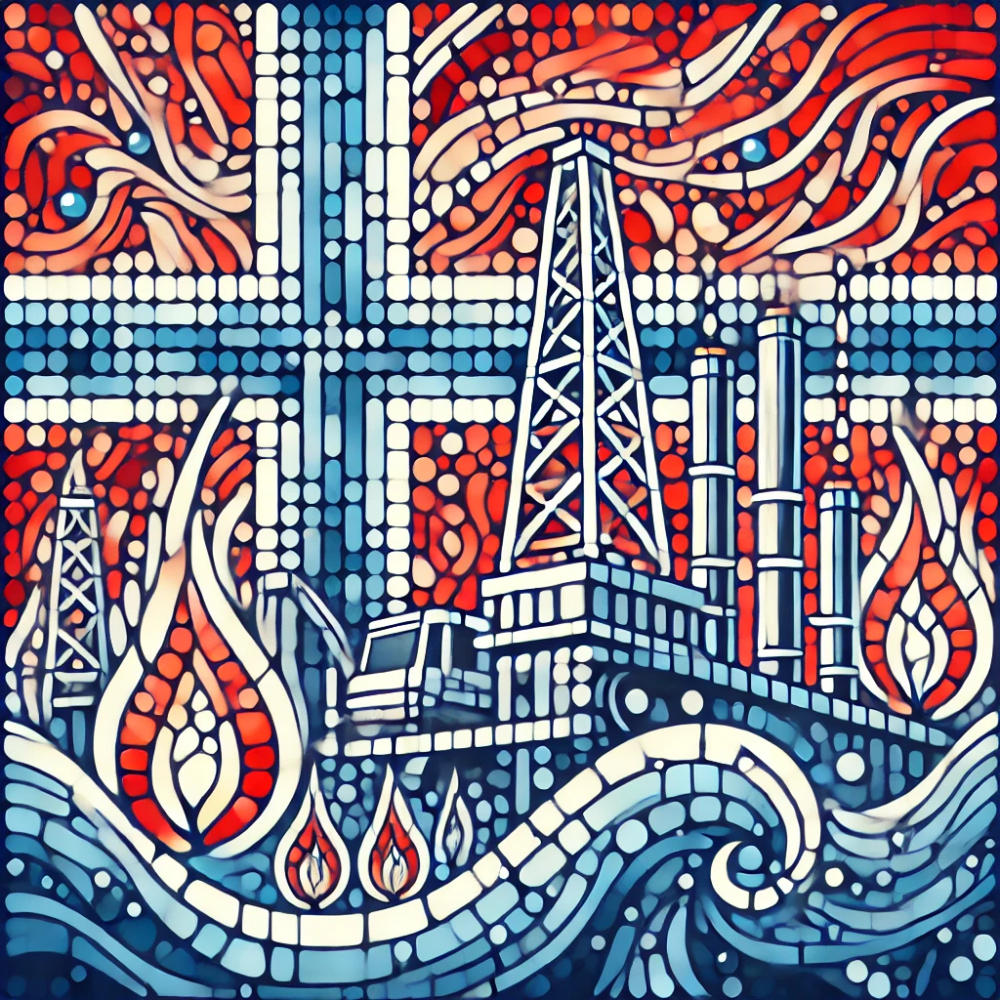

| Главная | Финляндия | Швеция | Норвегия | Дания |
|---|
Название 'Норвегия' (Norway) означает 'путь на север' и связано с викингами.
Происхождение слова Норвегия
Название страны происходит от древнескандинавского Norreweg — «северный путь», которое первоначально относилось к прибрежному морскому пути, по которому норманны выходили в северные моря. Впоследствии этим названием стали обозначать западное побережье Скандинавского полуострова вдоль морского пути, а затем и возникшее здесь государство. Страна имеет два названия, на обеих версиях норвежского языка — Norge на букмоле и Noreg на нюношке.
Норвегия была частью Дании до 1814 года, затем Швеции. Полная независимость – в 1905 году.
Люди жили в Норвегии еще с 9000 по 8000 год до нашей эры. Первые жители жили в пещерах и палатках. Германские племена переселились в этот район. Вместо охоты и собирательства люди начали заниматься сельским хозяйством. Фермерские поселения организовались в небольшие независимые государства. К восьмому веку нашей эры таких государств было 30. В 9-11 веках воины-викинги отправлялись из скандинавских стран совершать набеги на Европу и расширять свои территории. В 872 году Харальд Прекрасноволосый стал первым правителем, объединившим большую часть западной Норвегии. Дания и Швеция вторглись в Норвегию во время правления потомка Харальда Фэйрхейра. Дания правила Норвегией в течение следующего столетия. В 1319 году контроль над Норвегией перешёл к Швеции. В 1397 году королева Маргрете в конце 14 века объединила Данию, Норвегию и Швецию в Кальмарскую унию. Швеция вышла из Союза в 1523 году, но Дания управляла Норвегией до 1814 года. В течение части XIX века Норвегия вернулась под контроль Швеции. Норвегия стала независимой страной в 1905 году. Норвегия разделена на 19 графств, называемых фюлькер (FEWL-ker). Король назначает губернатора каждому филкеру. В каждом округе также есть общественный совет, состоящий из выборных должностных лиц. Члены норвежского парламента, называемого Стортинг (Stoor-TING), избираются каждые четыре года. Граждане Норвегии в возрасте 18 лет и старше могут голосовать на парламентских выборах. В норвежском правительстве также есть кабинет, состоящий из премьер-министра и других выборных должностных лиц.
Известна своими фьордами. Граничит со Швецией, Финляндией и Россией.
Природа
В Норвегии преобладает горный рельеф. Бо́льшую часть страны занимают Скандинавские горы, их западные склоны крутые, глубоко изрезаны фьордами, восточные – широкие и более пологие, расчленённые долинами крупных рек (долины Эстердален, Гудбраннсдален, Нумедал и др.).
В южной, наиболее высокой и широкой части Скандинавских гор преобладают обширные пенепленизированные плоскогорья (фьельды): Ютунхеймен (высота до 2469 м, гора Галлхёпигген – высшая точка Норвегии), Доврефьелль (до 2286 м, гора Снёхетта), Юстедалсбреэн (до 2083 м, гора Лудалскопа), Хардангервидда (до 1691 м, гора Хортейген) и др. Монотонный рельеф плоскогорий местами осложнён конусообразными кряжами и группами заострённых зубчатых вершин – нунатаков. Повсеместно встречаются невысокие холмы типа «бараньих лбов», озовые гряды и окаймляющие их ложбины, частично занятые болотами и озёрами. В северной, наиболее суженной (до 10 км и менее) части Норвегии Скандинавские горы сильно раздроблены на более низкие массивы: Эльфьеллет (высота до 1754 м), Бёргефьелль, Свартисен и др. На островах Лофотенские и Вестеролен представлены альпинотипные низковысотные хребты (высота 1000–1200 м), расчленённые многочисленными карами. На крайнем севере страны – низкое (высота 300–500 м) всхолмлённое плоскогорье Финнмаркен с отдельными вершинами до 1139 м (гора Чуоккарашша).
Равнинный рельеф представлен в пределах узкой (30–40 км) приморской полосы (странфлат) и небольшими участками – в центре, на юге и востоке страны. Холмистая низменность, окаймляющая Тронхеймс-фьорд, разделяет горы южной и северной частей страны; с востока её ограничивают низковысотные массивы Иннхерад, Лиерне и др. высотой до 1160 м. Для рельефа этой низменности характерны моренные гряды, высокие (до 200 м) речные и морские террасы, расположенные в виде своеобразных «этажей». На юге Норвегии к Осло-фьорду примыкает низкая холмистая прибрежная равнина с преобладанием ледниково-аккумулятивных форм рельефа. В горах, особенно в северной части страны, часты сходы лавин; в пределах холмистых низменностей активны оползни.
Климат
Бо́льшая часть территории Норвегии находится в умеренном климатическом поясе, при этом в прибрежных районах преобладает океанический климат с мягкой зимой благодаря влиянию тёплого Северо-Атлантического течения. Средняя температура января варьируется от -4°C на севере до 2°C на юге, а лето прохладное, с частыми дождями и сильными ветрами, при средней температуре июля от 10°C до 15°C. В межгорных котловинах на восточных склонах Скандинавских гор и во внутренних частях плоскогорья Финнмаркен климат становится более континентальным, здесь средняя температура января достигает -9°C и -17°C, а июля — 17°C и 13°C. Годовое количество осадков значительно различается: на западных склонах Скандинавских гор оно достигает 2000–3000 мм, с максимумом в осенне-зимний период, тогда как на восточных склонах и крайнем севере осадков выпадает 400–800 мм и 300–400 мм соответственно, причём большая их часть приходится на лето. В горных районах проявляется вертикальная климатическая зональность: на фьельдах климат суровый, со среднегодовой температурой около -7°C. Снеговая линия в южной части страны располагается на высоте 1200 м, а на севере опускается до 400–500 м. Оледенение Норвегии занимает площадь 2382 км² (по данным 2019 года), из которых 1400 км² приходится на юг страны и 928 км² — на север. Наиболее значительные ледники включают Юстедалсбреэн (487 км², крупнейший в материковой Европе), Свартисен и Фолгефонн. В настоящее время большинство ледников Норвегии находится в стадии отступания.
Богатая страна благодаря нефти и газу. Важные компании: Equinor, Norsk Hydro, Yara.

Сильные традиции народной музыки, искусства и литературы (Ибсен, Мунх).
Популярные места: Гейрангер-фьорд, Лофотенские острова, северное сияние в Тромсё.
Один из самых красивых фьордов Норвегии, включённый в список ЮНЕСКО. Гейрангер-фьорд славится водопадами "Семь сестёр" и живописными круизами, которые позволяют насладиться невероятными горными пейзажами. На его склонах находятся смотровые площадки, с которых открывается завораживающий вид.
Архипелаг в Норвегии, известный своими крутыми горами, рыболовными деревнями и уникальным северным ландшафтом. Здесь можно заниматься пешим туризмом, каякингом и катанием на лыжах. Лофотенские острова также привлекают фотографов своими захватывающими видами.
Тромсё — это одно из лучших мест в мире для наблюдения за северным сиянием. Благодаря своему расположению за Полярным кругом, здесь можно увидеть это природное явление в период с сентября по март. В городе также есть интересные музеи, посвященные арктическим исследованиям.
| Главная | Финляндия | Швеция | Норвегия | Дания |
|---|